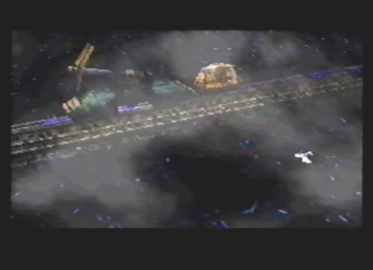
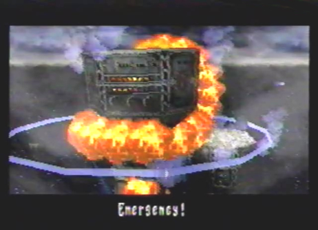

Diary Entry 20: Imperial Air Force Post Shrouded in the Early Morning Fog Shrouded in the early morning fog, I made my way into the Imperial Air Force Post. A Yellow Alert was immediately commenced, and all surrounding searchlights turned on. The dragon took on his Spiritual form, for the coming battles ahead. As we flew straight ahead, the dragon started destroying everything around him, including: nearby fans, and searchlights. We destroyed as many searchlights as we could, in order to pass undetected. Unfortunately, we made a slight mistake and flew over one of the searchlights by accident. It was then that we were engaged by an imperial battleship. We made quick work of it. Our presence was now known and we had to fight our way through many Imperial ships. After a while, we managed to make it to one of the four walls surrounding the Control Tower. As we attempted to pass over it, an Imperial cannon stopped us in our tracks. The walls were too heavily guarded, I knew I had to destroy the Anchored Fleet first. As we explored the area, I counted twenty anchored ships in all. It was time to start destroying them. As we approached one, I noticed three supply crates under the ship. I made sure to have the dragon lock-on to each crate one by one, as well as the ship itself. The dragon's lasers completely destroyed the ship and we received the three items inside the crates, before everything fell into the murky waters. For each ship, we received 3 items. When we destroyed ten ships, we were greeted by a massive Imperial battlestation. After we destroyed it, a Red Alert sounded, the outer most walls began to rise, and the walls surrounding the Control Tower descended into the water. They had now completely spotted me! Things weren't going as I planned it, and I wondered why I got the idea that I could sneak up on an Imperial Assault Post? I had to act fast. This was our chance! We made our way to the Control Tower. The journey didn't go so smoothly, though. We were attacked by multiple battleships. After many life or death battles, we finally arrived at the Control Tower. It had six break away points, all of which we had to destroy. Once these six break away points were destroyed, the tower exploded! An alarm was then sent to the northern launch pad. I had to make my way over there. On my way, I made sure to get the items from the remaining ten ships. When I reached the northern launch pad, the dragon shot a laser at it. The Imperial soldiers were readying a giant warhead, destined for Zoah! The rail lifts raised, and the warhead was sent along the rails to be launched up into the sky. I had little time to fool around, I had to stop it here and now or Zoah would be reduced to nothing but ash! As it launched up into the sky, the dragon and I attacked the hell out of the thing. It was reduced to its simplest form, the main warhead. A final blast from the dragon's Armageddon berserk technique, finally took the menacing thing down. It was just in the nick of time too! If we had spend any more time trying to stop the thing, it would have been too late. It felt like a heavy weight had been lifted off of my shoulders, Zoah and all of its people were now safe. We left the heavily damaged Imperial Air Force Post, and headed back to the Village of Zoah, to tell Vaiman the good news. |
|
| Divine
Overview |
1. As you enter the Imperial Air Force Post, a Yellow Alert will commence and all of the surrounding searchlights will turn on. |
2. Immediately press start and go into your player menu, enter "Select Dragon Type" and change your dragon into Spiritual form. Now, there is a little trick that is very helpful to know. Note, the analog Saturn controller is needed for this. By pressing the analog stick right slightly, and lightly, your spiritual gauge will fill up. Try to get it to 200. By pressing the analog stick down slightly and lightly, your agility gauge will fill up. Try to get it to 197 or somewhere in the 190s range. If you are successful in pulling this off, as seen above, your berserk attacks will take more damage and your gauges will fill up faster, speeding up your dragon's movement around the enemy in the process. The result is an almost equal combination of Spiritual form and Agility form, with the Spiritual form being more dominant. Try this process out for the other forms, to get similar effects. |
3. Another extremely helpful tip to know, is how to refill your BP without having to waste items. Note, you have to be in Spiritual form for this to happen. When fighting the Patrol Group, Stingers, Missile Cruiser, and Plasma Cannon you can do just that. When fighting these enemies, if you're low on BP, stay in the green safe zones and let your three gauges fill up. When all three are completely filled, your BP will gradually increase, allowing you to fill it back up to the max, as long as you stay in the green safe zones. This allows you to save your items for the more important boss fights, very convenient. Make good use of it. |
4. Directly straight ahead from where you start out, the map device can be found. You'll need it, this is a fairly large area to expore! |
5. Right near the map device, you'll find spinning fans, these are very similar to the fans you were able to destroy in Panzer Dragoon 2 Zwei, in Episode 1, "Destiny Begins." Of course, you can destroy them here as well, as seen above. |
6. You can also destroy the many searchlights found throughout the area. |
7. Be careful though, if you fly within the searchlights range, you will be spotted, and an alarm will sound. |
8. You will then have to do battle with an Enforcer. |
9. It takes a while, but eventually you will fight Battle Cruisers, rare enemies. You may also remember these ships from Panzer Dragoon 2 Zwei, when you fought against the Maccania Empire in Episode 3. |
10. Eventually you will also fight War Ships, another set of rare enemies from Panzer Dragoon 2 Zwei. |
 11. If you attempt to pass over one of the 4 outer walls surrounding the Control Tower, you will be ambushed by a Plasma Cannon. |
12. Your main objective is to destroy the Imperial Air Force Post's central Control Tower. In order to get to the tower, you have to destroy the Anchored Fleet first. Each anchored ship has three item boxes. If you don't first lock-on to each of the 3 boxes, as well as the ship, the boxes will fall into the water and you will miss out on the items inside. There are twenty ships in all, their locations as well as the items inside, can be found on the map. Upon destroying ten anchored ships, you will have to fight the Behemoth sub-boss. |
13. When the tenth anchored ship is destroyed, you will be greeted by the Behemoth battlestation. |
14. I hope you have Astral Phantoms, because you'll need it. If not, you can use Vengeance Orbs instead. |
15. After the Behemoth is destroyed, a Red Alert will sound, the outer most walls will rise, and the walls surrounding the Control Tower will lower. |
16. This is your chance to advance to the Control Tower. Along the way, you will have to fight multiple battles. Be prepared! |
17. Once you finally arrive at the Control Tower you will have to destroy six break targets surrounding the tower, as seen above. |
 18. When the six break targets are destroyed, the Control Tower will explode! |
19. Soon after, the launch pad to the north, will ready the Deathmaker to be launched. Target, Zoah! You better stop them. |
20. Before heading north, make sure to acquire the rest of the items from the ten remaining anchored ships. Refer to the map, if you're having trouble finding them. |
21. Once you're finished exploring, head north to the launch pad, lock-on to it, and fire! |
22. The rail lifts will be raised and the Deathmaker will commence its launching process. |
23. You will have seven minutes to destroy it, before it turns the Village of Zoah to a wasteland of ashes! Are you up to it?! |
24. Zoah is saved! Just in the nick of time. How close did you come? |
|
25. Now, head back to the Village of Zoah and tell Vaiman the good news. |